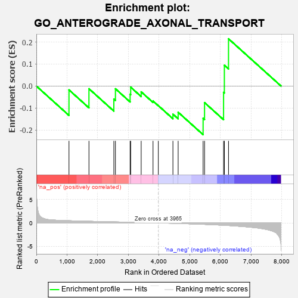

| | | Dataset | 7d |
| Phenotype | NoPhenotypeAvailable |
| Upregulated in class | na_neg |
| GeneSet | GO_ANTEROGRADE_AXONAL_TRANSPORT |
| Enrichment Score (ES) | -0.2212986 |
| Normalized Enrichment Score (NES) | -0.5303329 |
| Nominal p-value | 0.95778745 |
| FDR q-value | 1.0 |
| FWER p-Value | 1.0 |
Table: GSEA Results Summary

Fig 1: Enrichment plot: GO_ANTEROGRADE_AXONAL_TRANSPORT
Profile of the Running ES Score & Positions of GeneSet Members on the Rank Ordered List
| PROBE | GENE SYMBOL | GENE_TITLE | RANK IN GENE LIST | RANK METRIC SCORE | RUNNING ES | CORE ENRICHMENT | | 1 | AP3S1 | | | 1063 | 0.471 | -0.0176 | Yes |
| 2 | TRAK1 | | | 1714 | 0.354 | -0.0123 | Yes |
| 3 | SPG7 | | | 2525 | 0.223 | -0.0591 | Yes |
| 4 | ARL8B | | | 2577 | 0.216 | -0.0125 | Yes |
| 5 | FEZ1 | | | 3055 | 0.142 | -0.0374 | Yes |
| 6 | MAP2 | | | 3074 | 0.140 | -0.0053 | Yes |
| 7 | KIF1A | | | 3415 | 0.088 | -0.0264 | Yes |
| 8 | SPAST | | | 3801 | 0.027 | -0.0681 | Yes |
| 9 | AP3B2 | | | 3974 | -0.002 | -0.0891 | Yes |
| 10 | KIF3B | | | 4450 | -0.085 | -0.1280 | Yes |
| 11 | RAB21 | | | 4620 | -0.122 | -0.1192 | Yes |
| 12 | AP3S2 | | | 5433 | -0.303 | -0.1467 | Yes |
| 13 | KIF3A | | | 5480 | -0.313 | -0.0754 | Yes |
| 14 | AP3M1 | | | 6100 | -0.506 | -0.0287 | Yes |
| 15 | DLG2 | | | 6126 | -0.513 | 0.0944 | Yes |
| 16 | AP3D1 | | | 6261 | -0.558 | 0.2149 | Yes |
Table: GSEA details [plain text format]
Fig 2: GO_ANTEROGRADE_AXONAL_TRANSPORT: Random ES distribution
Gene set null distribution of ES for GO_ANTEROGRADE_AXONAL_TRANSPORT